File: 000630.gt.txt (if the image is defective, simply delete all Arabic text and the line will be excluded)
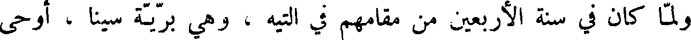
ولما كان في سنة الأربعين من مقامهم في التيه ، وهي برية سينا ، أوحى
File: 000631.gt.txt (if the image is defective, simply delete all Arabic text and the line will be excluded)
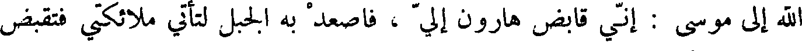
الله إلى موسى : إني قابض هارون إلي ، فاصعد به الجبل لتأتى ملائكتي فتقبض
File: 000632.gt.txt (if the image is defective, simply delete all Arabic text and the line will be excluded)
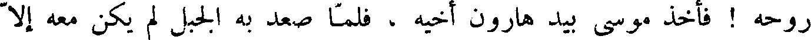
روحه ! فاخذ موسى بيد هارون أخيه ، فلما صعد به الجبل لم يكن معه إلا
File: 000633.gt.txt (if the image is defective, simply delete all Arabic text and the line will be excluded)
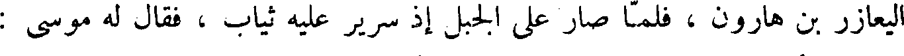
اليعازر بن هارون ، فلما صار على الجبل إذ سرير عليه ثياب ، فقال له موسى :
File: 000634.gt.txt (if the image is defective, simply delete all Arabic text and the line will be excluded)
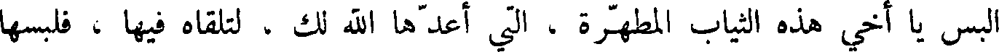
البس يا أخي هذه الثياب المطهرة ، التي أعدها الله لك ، لتلقاه فيها ، فلبسها
File: 000635.gt.txt (if the image is defective, simply delete all Arabic text and the line will be excluded)
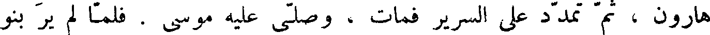
هارون ، ثم تمدد على السرير فمات ، وصلى عليه موسى . فلما لم ير بنو
File: 000636.gt.txt (if the image is defective, simply delete all Arabic text and the line will be excluded)
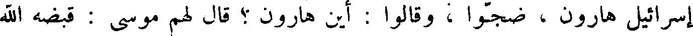
إسرائيل هارون ، ضجوا ، وقالوا : أين هارون ؟ قال لهم موسى : قبضه الله
File: 000637.gt.txt (if the image is defective, simply delete all Arabic text and the line will be excluded)
إليه ، فاضطربوا .
File: 000638.gt.txt (if the image is defective, simply delete all Arabic text and the line will be excluded)
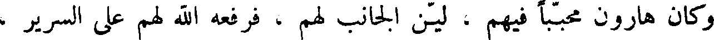
وكان هارون محببا فيهم ، لين الجانب لهم ، فرفعه الله لهم على السرير ،
File: 000639.gt.txt (if the image is defective, simply delete all Arabic text and the line will be excluded)
حتى رأوا وجهه ، فعلموا انه قد مات ، وكانت سنو هارون يومئذ مائة وثلاثا
File: 000640.gt.txt (if the image is defective, simply delete all Arabic text and the line will be excluded)
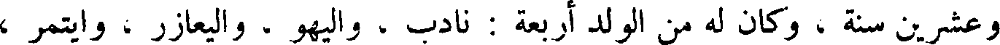
وعشرين سنة ، وكان له من الولد أربعة : نادب ، واليهو ، و اليعازر ، وايتمر ،
File: 000641.gt.txt (if the image is defective, simply delete all Arabic text and the line will be excluded)
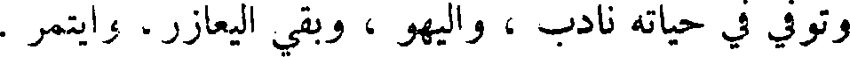
وتوفي في حياته نادب ، واليهو ، وبقي اليعازر ، وايتمر .
File: 000642.gt.txt (if the image is defective, simply delete all Arabic text and the line will be excluded)
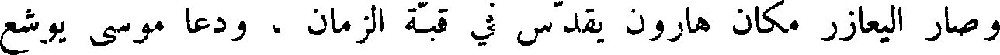
وصار اليعازر مكان هارون يقدس في قبة الزمان ، ودعا موسى يوشع
File: 000643.gt.txt (if the image is defective, simply delete all Arabic text and the line will be excluded)
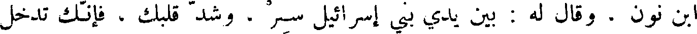
ابن نون . وقال له : بين يدي بني إسرائيل سر . وشد قلبك ، فإنك تدخل
File: 000644.gt.txt (if the image is defective, simply delete all Arabic text and the line will be excluded)
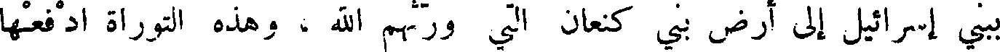
ببني إسرائيل إلى ارض بني كنعان التي ورثهم الله ، وهذه التوراة ادفعها
File: 000645.gt.txt (if the image is defective, simply delete all Arabic text and the line will be excluded)
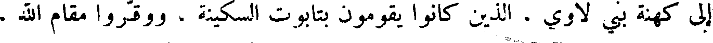
إلى كهنة بني لاوي . الذين كانوا يقومون بتابوت السكينة ، ووقروا مقام الله .
File: 000646.gt.txt (if the image is defective, simply delete all Arabic text and the line will be excluded)
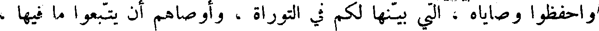
واحفظوا وصاياه ، التي بينها لكم في التوراة ، وأوصاهم أن يتبعوا ما فيها ،
File: 000647.gt.txt (if the image is defective, simply delete all Arabic text and the line will be excluded)
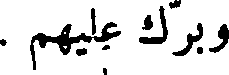
وبرك عليهم .
File: 000648.gt.txt (if the image is defective, simply delete all Arabic text and the line will be excluded)
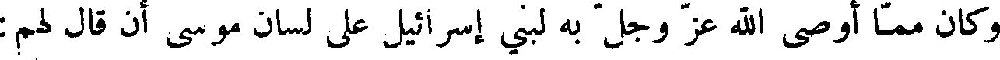
وكان مما أوصى الله عز وجل به لبنيا إسرائيل على لسان موسى أن قال لهم:
File: 000649.gt.txt (if the image is defective, simply delete all Arabic text and the line will be excluded)
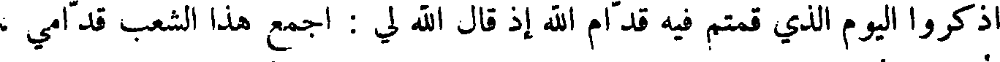
اذكروا اليوم الذي قمتم فيه قدام الله إذ قال الله لي : اجمع هذا الشعب قدامي ،
File: 000650.gt.txt (if the image is defective, simply delete all Arabic text and the line will be excluded)
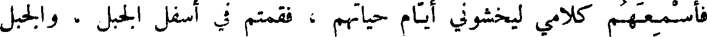
فأسمعهم كلامي ليخشوني أيام حياتهم ، فقمتم في اسفل الجبل ، والجبل
File: 000651.gt.txt (if the image is defective, simply delete all Arabic text and the line will be excluded)
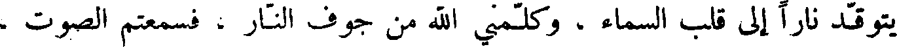
يتوقد نارا إلى قلب السماء ، وكلمني الله من جوف النار ، فسمعتم الصوت ،
File: 000652.gt.txt (if the image is defective, simply delete all Arabic text and the line will be excluded)
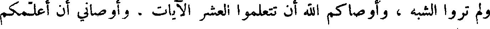
ولم تروا الشبه ، وأوصاكم الله أن تتعلموا العشر الآيات ، وأوصاني أن أعلمكم
File: 000653.gt.txt (if the image is defective, simply delete all Arabic text and the line will be excluded)
الجبل ، حتى اشترى البيدر بخمسين أستارا ، وابتنى هناك مذبحا ، فكف الموت
File: 000654.gt.txt (if the image is defective, simply delete all Arabic text and the line will be excluded)
عن بني إسرائيل .
File: 000655.gt.txt (if the image is defective, simply delete all Arabic text and the line will be excluded)
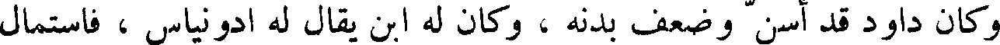
وكان داود قد أسن وضعف بدنه ، وكان له ابن يقال له ادونياس ، فاستمال
File: 000656.gt.txt (if the image is defective, simply delete all Arabic text and the line will be excluded)
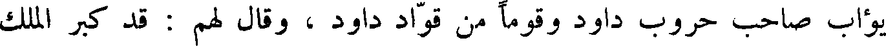
يؤاب صاحب حروب داود وقوما من قواد داود ، وقال لهم : قد كبر الملك
File: 000657.gt.txt (if the image is defective, simply delete all Arabic text and the line will be excluded)
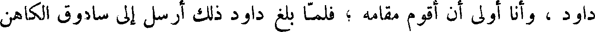
داود ، وأنا أولى أن أقوم مقامه ؛ فلما بلغ داود ذلك أرسل إلى سادوق الكاهن
File: 000658.gt.txt (if the image is defective, simply delete all Arabic text and the line will be excluded)
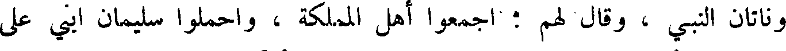
وناتان النبي ، وقال لهم : اجمعوا أهل المملكة ، واحملوا سليمان ابني على
File: 000659.gt.txt (if the image is defective, simply delete all Arabic text and the line will be excluded)
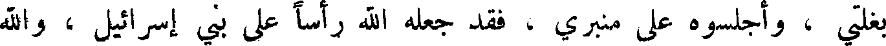
بغلي ، أجلسوه على منبري ، فقد جعله الله رأسا على بني إسرائيل ، والله
To Save: `Ctrl+s`, make sure to choose `Webpage, complete`!